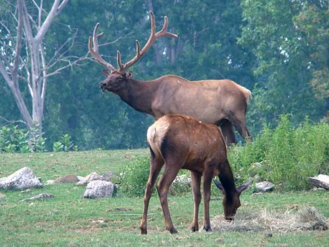

Vânătoarea
Fondul de vânătoare al României este de 22 de milioane de hectare, împărțit în 2.100 de fonduri de vânătoare.  Suma totală, anuală, încasată la bugetul de stat de pe urma vânatului este de 600 de mii de euro, din care 200 de mii provin de la AGVPSR.
În sezonul mai 2008 - mai 2009, în pădurile României existau 167 de mii de căprioare, iar cota de vânătoare a fost de 10.200 de exemplare, din care au fost împușcate 9.000. Au fost 59.218 mistreți, o cotă de vânătoare de 16.660, împușcați 14.000. S-au numărat 1,41 milioane iepuri, la o cotă de 134.000, din care au fost sacrificați - 113.000. Au fost înregistrați 367.000 de fazani, la o cotă de 69.000, din care împușcați - 56.000.